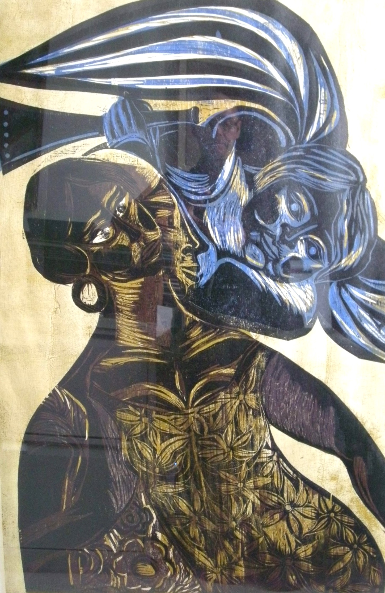

Emanoel Araujo
1940 – 2022
Artist Biography
Emanoel Araújo was a very well-known Brazilian sculptor and printmaker, curator and collector, who was born in Salvador da Bahia. He studied printmaking at the School of Fine Arts of Bahia from 1961-65 and had his first solo show as early as 1959. Since then he exhibited widely, both within Brazil and internationally, and received many awards among them the Gold Medal of the III Graphic Biennial of Florence, Italy (1972). He was elected Best Engraver of the Year, 1974, and Best Sculptor of the Year, 1983, both awards made by the Association of Art Critics of São Paulo. In the 1980s he became the director of the Bahia Museum of Arts and taught graphic arts and sculpture at the Arts College at the City University of New York. In the 1990s he led the modernisation of the Pinacoteca of the State of São Paulo, of which he was director, and in 2004 he founded the Afro Brazil Museum. The artist lived and worked in São Paulo, Brazil. A major posthumous retrospective was held at Jack Shainman Gallery in New York 2023.

Untitled, 1966